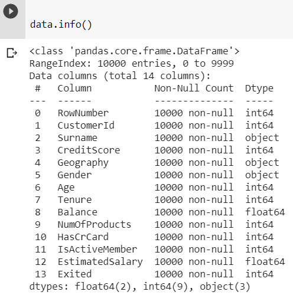
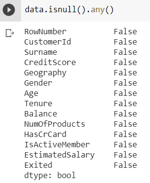
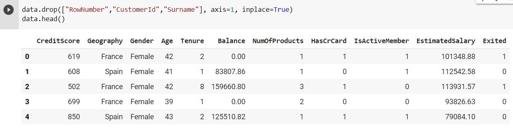
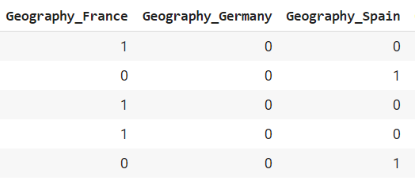
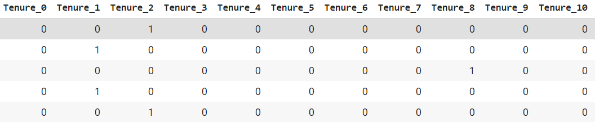
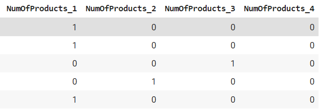
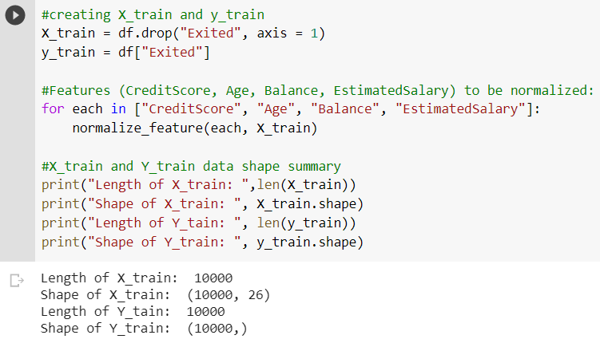
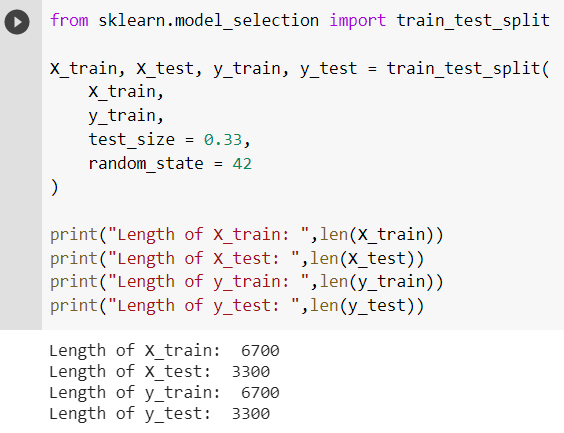
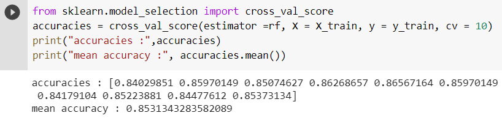
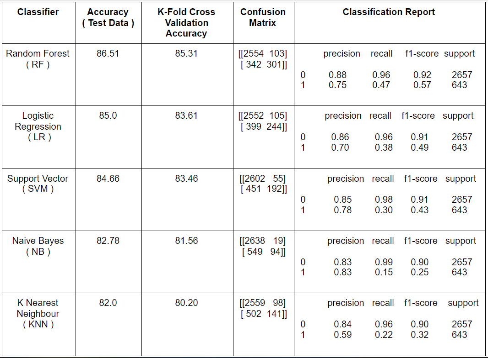

1. DESCRIPTION
1.A PROBLEM STATEMENT
Consider a labeled dataset belonging to an application domain. Apply suitable data preprocessing steps such as handling of null values, data reduction, discretization. For prediction of class labels of given data instances, build classifier models using different techniques (minimum 3), analyze the confusion matrix and compare these models. Also apply cross validation while preparing the training and testing datasets.
1.B DATASET DESCRIPTION
A bank is investigating a very high rate of customer leaving the bank. Here is a 10,000 records dataset to investigate and predict which of the customers are more likely to leave the bank soon.
We will be guiding you with the implementation part simultaneosuly. Current project can be run on any Python,Jupyter notebook,Google Colab etc.
The project requires the following imports:
- Numpy - for Linear Algebra
- Pandas - for Data Preprocessing and CSV I/O
- Matplotlib - Data Visualization
- sklearn.modelselection - for Modelling
- sklearn.linear_model - for Logistic Regression Classifier
- sklearn.svm - for Support Vector Classifier
- sklearn.naive_bayes - for Gaussian Naive Bayes Classifier
- sklearn.neighbors - for KNeighbors Classifier
- sklearn.ensemble - for Random Forest Classifier
- sklearn.metrics - for Accuracy Score, Confusion Matrix and Classification Report
As and when the need aries the imports are executed in the project.
Title of the dataset that is to be anaysed throughout the project is 'Churn_Modelling.csv' which is manually uploaded to the execution environment.We loaded the dataset into a variable 'data'.Following is the description of all the attributes of the dataframe -
1.C ATTRIBUTES ANALYSIS
On analysis of the attributes of dataset, attributes are categorized as follows:
- Categorical Variables
- Numerical Variables
- Geography
- Gender
- HasCrCard
- IsActiveMember
- Exited
- NumOfProducts
- CreditScore
- Age
- Tenure
- Balance
- EstimatedSalary
From the following features,'Exited' is a categorical feature which determines whether the customer left the bank or not.
2. PREPROCESSING
2.A MISSING VALUES
We can check missing value also by isnull() method as below:
From above, it can be concluded that there are no missing value in any of the columns. There are 10000 items and each column has 10000 non-null items.
2.B DROPPING UNNECESSARY COLUMNS
Here we can clearly observe that columns'Rownumber', 'CustomerId' and 'Surname' does not provide any meaningful information. Hence we are dropping the above mentioned columns.
2.C DISCRETIZATION
Now we will convert the following attributes into categorical values.
- Geography 
- Gender
- Tenure 
- NumOfProducts 

3. CLASSIFICATION
3.A MODELLING
Modelling includes creation of train, test data by splitting the dataset. The steps followed below are:
- Create X_train by dropping the dependent attribute "Exited" from the dataframe df.
- Create y_train by considering the dependent attribute "Exited" from the dataframe df.
- Normalizing necessary attributes (CreditScore, Age, Balance, EstimatedSalary)
- Splitting the X_train and y_train as X_Train,y_Train,X_Test,y_test. The split ratio varies according to the discretion of the user. Here we have used the splitting ratio as 0.33.
Here we have executed some instructions for better understanding of the splitted data shape. 

3.B LOGISTIC REGRESSION
3.C SVM
3.D NAIVE BAYES
3.E KNN
3.F RANDOM FOREST
4. METRICS
4.A K-FOLD CROSS VALIDATION
In this case of cross validation, we will divide the complete dataset into k parts.Each section will act as the test set and rest of the k-1 sections will be used for training.Hence we get k different accuracy scores.For this dataset, we have k=10.Finally from these k scores, we obtain a mean accuracy which helps us compare the classifiers with better precision.Below is implementation of k-fold cross validation on Random Forest Classifier -
Further classifier's summary is given in the below table (Following table is arranged in descending order of their respective mean accuracies) -
